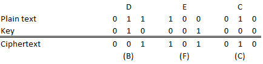

The XOR cipher executes exclusive conjunction (logic XOR) bitwise with the plaintext and the keyword. Another encryption with the same key results in the plaintext again, due to the symmetric nature of the XOR conjunction. XOR is one of the simplest bit ciphers, and is widely used in modern cryptographic block ciphers.
The XOR cipher is a polyalphabetic substitution cipher.
The XOR algorithm encodes the characters of the plain text into binary, which are then bitwise XOR-combined, resulting in binary ciphertext characters. The encoding follows the enumeration of the alphabets – the first character is encoded with …0000, the next one with …0001 and so on).
To guarantee, that every result of an XOR-combination has a correspondent character in the ciphertext alphabet, this alphabet has to be a length that is a power of two, and must have more or equal elements than the plain text alphabet.
Be the plain text alphabet „ABCDEFGH“, and the cipher text alphabet he same, the encodings of the characters would be:
A … 000
B … 001
C … 010
D … 011
E … 100
F … 101
G … 110
H … 111
Encrypting the text „DEC“ with the key
„CBA“ would result in:

The decryption is „encrypting“ the ciphertext with the key used for encryption again.